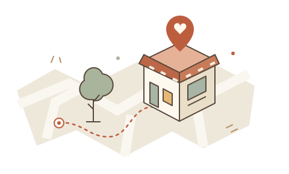

THE NEXT STOP, TOGETHER
「なんでもいい」に、
ちょうどいい答えを。
気分をたどって、食べたいものをひとつ。
気分を合わせて、そのまま出かけよう。

01 答える02 見つかる03 出かける
まずは、ここから
- 気分
- 空間
- 距離
LET’S GO SOMEWHERE
今日は、誰と？
一緒にいる人を選んでください。
登録なし。迷ったら、直感で。
近くに候補がなければ半径5kmまで、必要に応じて近いジャンルも探します。
現在地の座標をOpenPOI APIへ送って検索します。アプリには保存しません。
FINDING YOUR NEXT STOP
近くの着地点を探しています
気分に合う場所を、少しだけ。
TODAY’S NEXT STOP
あなたにおすすめのお店
料理名で検索した候補です。提供メニューはGoogle マップで確認してください。
候補はここまで。気分や距離を変えて探せます。
徒歩の目安・施設情報について
直線距離を1.3倍し、毎分80mで歩くとした概算です。道順・坂・信号で変わります。静かさや営業状況は取得できないため、Google マップで確認してください。イラストは施設の写真や地図ではありません。
A LITTLE CHANGE OF PLANS
もう少し、探し方を変えてみよう。
LET’S TRY AGAIN